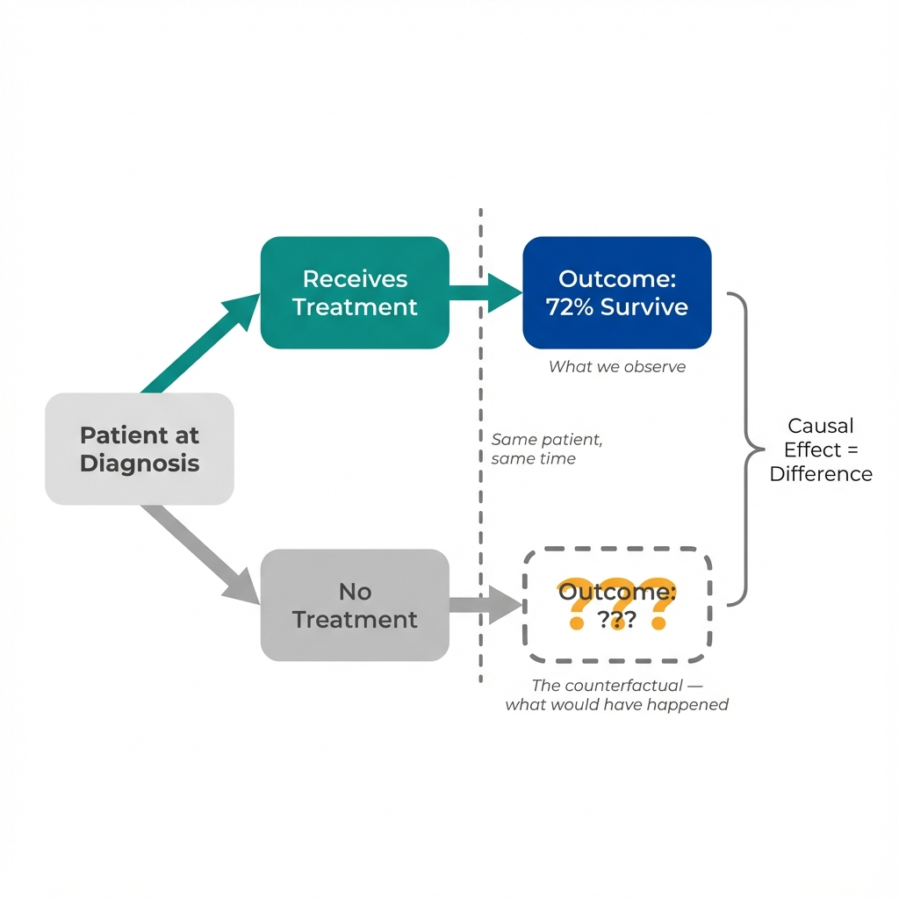
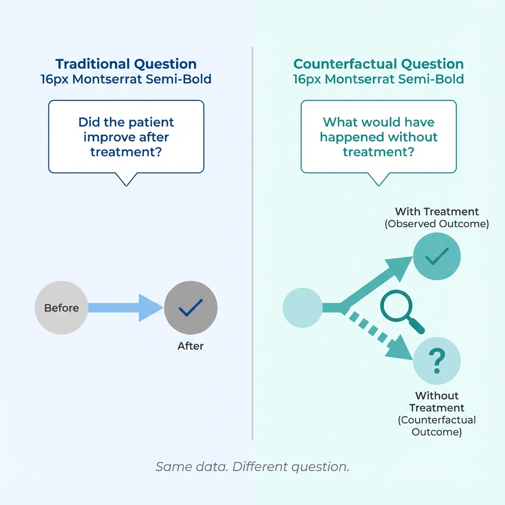

The Scenario
A patient receives a new treatment and their health improves. Did the treatment work? (This is a hypothetical scenario for illustration.)
Before Treatment
Maria, 52, has been diagnosed with high blood pressure. Her doctor prescribes a new medication.
Blood Pressure
145/95
Elevated
After Treatment
Three months later, Maria returns for a follow-up. Her blood pressure has improved significantly.
Blood Pressure
125/82
Normal
The Obvious Conclusion?
Maria's blood pressure dropped 20 points after taking the medication. The treatment worked!
Or did it?
To answer this question, we need to think about something we can never directly observe: what would have happened to Maria if she hadn't taken the medication?
Next: What if Maria's blood pressure would have improved anyway—without the medication?
The Counterfactual Reveal
The causal effect measures the difference between what happened and what would have happened otherwise.

At the moment of decision, reality splits into two paths. We can only observe one.
The Problem
We observed Maria's blood pressure after treatment: 125/82.
But we can't observe what her blood pressure would have been without treatment. This unobserved outcome is called the counterfactual.
The Hidden Truth
Imagine we could peek into an alternate universe where Maria didn't take the medication. In that world, she also:
- Started exercising more
- Reduced her salt intake
- Experienced less work stress
What We Observed
With medication
125/82
The Counterfactual
Without medication
130/85
The real causal effect of the medication: Only a 5-point reduction (from 130 to 125), not the 20 points we initially thought!
Most of Maria's improvement came from lifestyle changes that would have happened regardless of the medication.

The question you ask determines the answer you get.
Next: Why does this matter? What's the key insight for policy and research?
The Key Insight
Understanding counterfactuals changes how we think about evidence and causation.
The Fundamental Problem of Causal Inference
The causal effect is the difference between what happened and what would have happened.
We can only observe one of these outcomes. The counterfactual—what would have happened in the alternative scenario—remains forever hidden.
This is why simple before-after comparisons can be misleading. The patient may have improved, but we don't know how much of that improvement would have happened anyway.
The Traditional Question
This question measures change over time by comparing health before and after.
The limitation: many things change over time besides the treatment.
The Counterfactual Question
This question measures the causal effect by comparing reality to an unobserved alternative.
The challenge: we must estimate the counterfactual since we cannot directly observe it.
Why This Matters
Every causal claim—whether about medications, policies, or programs—makes an implicit claim about a counterfactual.
The claim "this program reduced hospitalizations by 15%" means: hospitalizations are 15% lower than they would have been without the program.
The entire field of causal inference is about finding clever ways to estimate this unobservable counterfactual.
Looking Ahead
In the next labs, you'll learn about specific threats to valid causal comparisons—and the research designs economists use to overcome them. Each threat represents a way the observed comparison can differ from the true counterfactual.
Key Takeaway
Causation is about comparing reality to an alternative that never happened.
The causal effect = Observed outcome − Counterfactual outcome
All causal inference centers on finding credible ways to estimate the counterfactual we cannot directly observe.